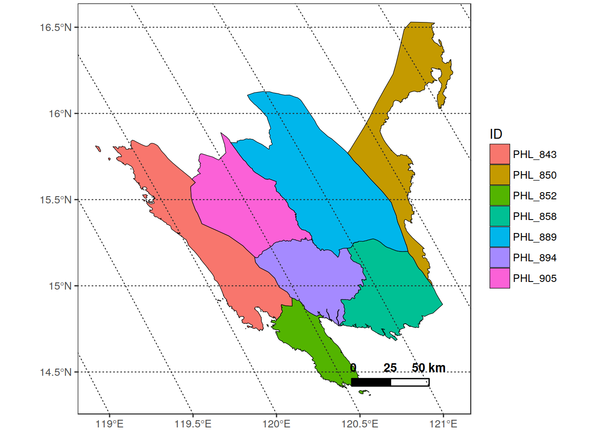

# ____________________________________________________________________________
# set input and output folders ####
# set the main folder ----
main_folder <- "/home/lb/my_data/prasia/Data"
# Load the reshuffled shapefile ----
in_shp <- read_vect(file.path(main_folder,
"vector/Ricetlas/riceatlas_asia_reshuffled.shp"))
## Set a region for the analysis ----
Region_name <- "Region_3_-_Central_Luzon"
## "1) Get the polygons of a specific region from the shapefile") ----
in_vect <- dplyr::filter(in_shp, Region == Region_name)
in_vect <- in_vect[1:3] %>%
sf::st_transform(get_proj4string(
file.path(main_folder,"orig_mosaic/param_series/decirc/eos_decirc.tif"))) %>%
unique()
plot_vect(in_vect, fill_var = "ID")
cat("Create cropped rasters and put them in the \"subsets\" subfolder")## Create cropped rasters and put them in the "subsets" subfolderin_rast_folder <- file.path(main_folder, "orig_mosaic/param_series/")
out_folder <- file.path(main_folder, "subsets", Region_name)
make_folder(out_folder, type = "dirname", verbose = T)
message("Extracting data on ", Region_name)
pr_extract_subarea(in_rast_folder,
in_vect,
out_folder = out_folder)
## 2. Extract the data from the different provinces of the region" ----
in_files <- list.files(
file.path(out_folder, "param_series/decirc"),
pattern = "*.RData",
full.names = TRUE)
in_files## [1] "/home/lb/my_data/prasia/Data/subsets/Region_3_-_Central_Luzon/param_series/decirc/eos_decirc.RData"
## [2] "/home/lb/my_data/prasia/Data/subsets/Region_3_-_Central_Luzon/param_series/decirc/pos_decirc.RData"
## [3] "/home/lb/my_data/prasia/Data/subsets/Region_3_-_Central_Luzon/param_series/decirc/sos_decirc.RData"#### test on one file ----
in_rast <- get(load(in_files[1]))
message("Working on : ", in_files[1])
out <- sprawl::extract_rast(in_rast,
in_vect,
na.value = 0,
join_geom = FALSE,
id_field = "ID",
verbose = FALSE)
out## $stats
## # A tibble: 392 x 12
## ID band_n date n_pix n_pix_val avg med sd min
## <fctr> <dbl> <date> <int> <int> <dbl> <dbl> <dbl> <dbl>
## 1 PHL_843 1 2003-01-01 68393 33 1101.455 1100 14.48510 1076
## 2 PHL_843 2 2003-01-01 68393 84 1239.000 1249 24.55189 1169
## 3 PHL_843 3 2003-01-01 68393 885 1340.471 1345 28.24250 1257
## 4 PHL_843 4 2003-01-01 68393 807 1387.587 1385 18.32833 1353
## 5 PHL_843 5 2004-01-01 68393 56 1479.714 1477 19.81892 1433
## 6 PHL_843 6 2004-01-01 68393 70 1600.286 1606 27.68411 1534
## 7 PHL_843 7 2004-01-01 68393 700 1687.131 1686 27.46557 1622
## 8 PHL_843 8 2004-01-01 68393 619 1758.388 1750 23.07280 1718
## 9 PHL_843 9 2005-01-01 68393 42 1845.095 1839 18.26073 1815
## 10 PHL_843 10 2005-01-01 68393 17 1953.176 1948 24.32138 1924
## # ... with 382 more rows, and 3 more variables: max <dbl>, OBJECTI <dbl>,
## # cty <fctr>
##
## $alldata
## # A tibble: 638,940 x 8
## ID band_n date n_pix_val N value OBJECTI cty
## <fctr> <int> <date> <int> <int> <dbl> <dbl> <fctr>
## 1 PHL_843 1 2003-01-01 33 1 1124 843 PHL
## 2 PHL_843 1 2003-01-01 33 2 1084 843 PHL
## 3 PHL_843 1 2003-01-01 33 3 1092 843 PHL
## 4 PHL_843 1 2003-01-01 33 4 1084 843 PHL
## 5 PHL_843 1 2003-01-01 33 5 1084 843 PHL
## 6 PHL_843 1 2003-01-01 33 6 1108 843 PHL
## 7 PHL_843 1 2003-01-01 33 7 1108 843 PHL
## 8 PHL_843 1 2003-01-01 33 8 1108 843 PHL
## 9 PHL_843 1 2003-01-01 33 9 1092 843 PHL
## 10 PHL_843 1 2003-01-01 33 10 1100 843 PHL
## # ... with 638,930 more rows## 3. Save results as an RData file for future use" ----
make_folder(file.path(out_folder, "RData"))
save(out, file = file.path(out_folder, "RData",
paste(Region_name, "stats.RData", sep = "_")))